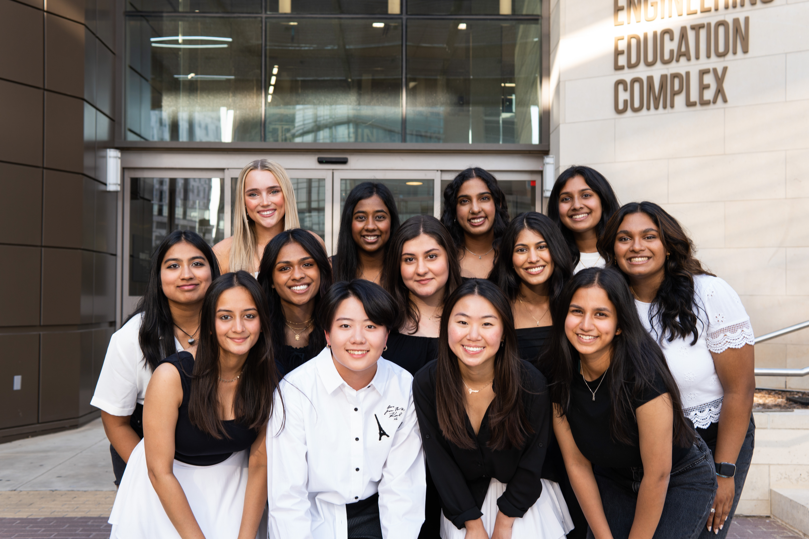
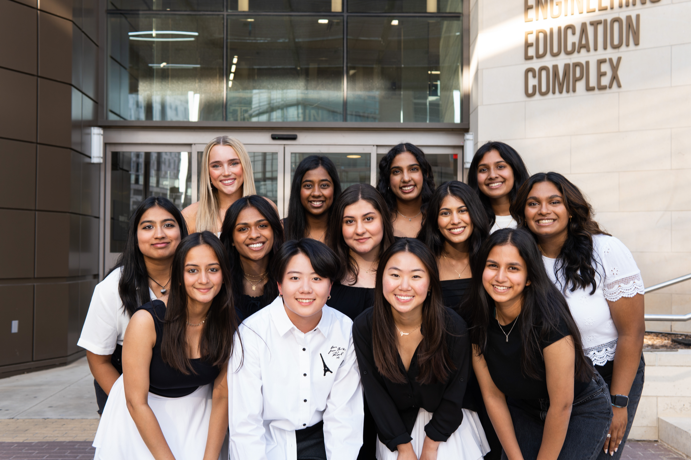

About Me
I am 22 years old and deeply passionate about the inclusion of women in computer science and the importance of accessibility. At Texas A&M university, I am apart of two clubs: Aggie Women in Computer Science (AWICS) and Aggie Royals. AWICS is a women’s organization that is centered around the inclusion of women in computer science. In AWICS, I am the marketing officer where I run the social media, do the department merch, etc. Aggie Royals is a women’s organization that is centered around our three pillars: service, commitment, and integrity.
 
